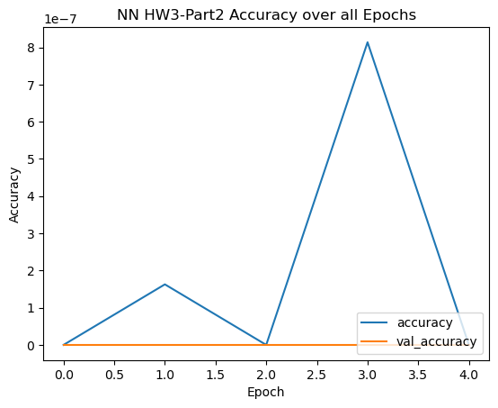
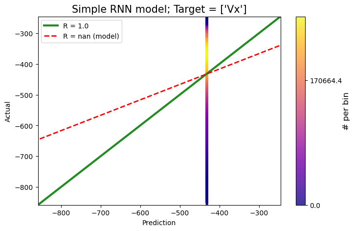

Module 3 Assignment - Part 3: Use TF/Keras to Create RNN and LSTM and Compare Results
Author
Jasmine Kobayashi
Module 3 Assignment - Part 4: Use TF/Keras to Create both an RNN and an LSTM and Compare Results
For this part, you can choose any dataset you like. I recommend choosing text data (such as movie reviews: https://keras.io/api/datasets/imdb/) and predicting sentiment. However, I will allow you to select any sequential dataset you like as long as it is appropriate for RNNs.
Use TF/Keras to create two models. The first will be a simple RNN. The second will be a LSTM model.
There are great examples online that you can review and learn from (but not copy :)). You can also have a look at one of my examples that compares ANN, CNN, RNN, and LSTM: https://gatesboltonanalytics.com/?page_id=903
Just as in Parts 1 and 2 (I will not repeat the requirements again here - but please assume them) you will illustrate your process and results. You will also discuss and illustrate a comparison between the RNN and the LSTM models.
#librariesimport tensorflow as tffrom tensorflow import kerasfrom tensorflow.keras import layersfrom sklearn.model_selection import train_test_splitfrom sklearn.metrics import confusion_matrixfrom sklearn.preprocessing import StandardScaler,MinMaxScalerimport tensorflow.kerasfrom tensorflow.keras.datasets import mnistfrom tensorflow.keras.models import Sequentialfrom tensorflow.keras.layers import LSTM, Dense, Dropout, LSTMfrom tensorflow.keras.optimizers import Adamimport matplotlib.pyplot as pltfrom tensorflow.keras import layersimport numpy as npimport pandas as pdimport seaborn as sns
2023-12-01 06:55:35.876779: I tensorflow/core/util/port.cc:110] oneDNN custom operations are on. You may see slightly different numerical results due to floating-point round-off errors from different computation orders. To turn them off, set the environment variable `TF_ENABLE_ONEDNN_OPTS=0`.
2023-12-01 06:55:35.932642: I tensorflow/core/platform/cpu_feature_guard.cc:182] This TensorFlow binary is optimized to use available CPU instructions in performance-critical operations.
To enable the following instructions: SSE4.1 SSE4.2 AVX AVX2 AVX512F AVX512_VNNI FMA, in other operations, rebuild TensorFlow with the appropriate compiler flags.
Data
I started messing around with the movie data, but ended struggling for a while since I’m less familar about working with text data, etc. So instead, I’m going to be using data from my undergrad research work, which is a time series data: NASA’s OMNI dataset.
However, one thing to note. The problem I tackle with this data is a regression problem not a classification problem. So I won’t be outputting a confusion matrix, but I will be sure to use another form of performance evaluation visualization.
Data loading
If I submitted as I intended, the csv data should’ve been included in my submission (titled “omni_df.csv”)
omni_df = pd.read_csv('omni_df.csv')
omni_df.head()
Epoch
BX_GSE
BY_GSE
BZ_GSE
Vx
Vy
Vz
proton_density
T
AE_INDEX
AL_INDEX
AU_INDEX
SYM_H
ASY_H
0
2000-01-01 00:00:00
-5.94
0.24
-0.15
NaN
NaN
NaN
NaN
NaN
668.0
-486.0
182.0
-44.0
48.0
1
2000-01-01 00:01:00
-5.88
2.17
0.53
-662.6
7.3
-46.5
3.12
343841.0
638.0
-487.0
151.0
-45.0
48.0
2
2000-01-01 00:02:00
-5.71
3.23
1.44
-661.4
2.4
-46.3
3.24
326583.0
666.0
-527.0
139.0
-45.0
48.0
3
2000-01-01 00:03:00
-5.33
3.80
1.84
-659.8
-8.4
-56.2
3.11
306470.0
615.0
-474.0
141.0
-45.0
48.0
4
2000-01-01 00:04:00
NaN
NaN
NaN
NaN
NaN
NaN
NaN
NaN
554.0
-418.0
136.0
-45.0
47.0
EDA
Data columns and their meanings:
JK Note to TAs: It’s not crucial to this work for you to understand these for the purposes of this assignment, but just in case it might be helpful.
SYM_H: Longitudinally symmetric disturbance of geomagnetic H-component
Sym-H is the same is the Dst Index, but at higher resolution
ASY_H: Longitudinally asymmetric disturbance of geomagnetic H-component
For my purposes the features (predictor variables, model input, etc. however you want to call it) are: BX_GSE, BY_GSE, BZ_GSE, AE_INDEX, AL_INDEX, AU_INDEX, SYM_H, ASY_H
And the targets (“label”, the model output, etc.) are: Vx, Vy, Vz, proton_density, T
omni_df.describe()
BX_GSE
BY_GSE
BZ_GSE
Vx
Vy
Vz
proton_density
T
AE_INDEX
AL_INDEX
AU_INDEX
SYM_H
ASY_H
count
8.888632e+06
8.888632e+06
8.888632e+06
7.679877e+06
7.679877e+06
7.679877e+06
7.679877e+06
7.673164e+06
9.552960e+06
9.552960e+06
9.552960e+06
9.552960e+06
9.552960e+06
mean
2.586364e-03
5.997560e-02
2.418269e-03
-4.353644e+02
-1.359368e+00
-2.238432e+00
5.999525e+00
9.880642e+04
1.792767e+02
-1.114364e+02
6.784032e+01
-1.203162e+01
2.011680e+01
std
3.660013e+00
4.227383e+00
3.395529e+00
1.053745e+02
2.552232e+01
2.266174e+01
4.988173e+00
9.744486e+04
2.102548e+02
1.550540e+02
7.383967e+01
1.971669e+01
1.593993e+01
min
-4.951000e+01
-5.109000e+01
-6.064000e+01
-1.136500e+03
-8.649000e+02
-3.104000e+02
3.000000e-02
5.430000e+02
1.000000e+00
-4.141000e+03
-9.750000e+02
-4.900000e+02
0.000000e+00
25%
-2.650000e+00
-2.670000e+00
-1.730000e+00
-4.948000e+02
-1.630000e+01
-1.490000e+01
3.000000e+00
3.551900e+04
4.200000e+01
-1.470000e+02
1.900000e+01
-1.900000e+01
1.100000e+01
50%
0.000000e+00
2.000000e-02
0.000000e+00
-4.126000e+02
-3.500000e+00
-2.100000e+00
4.600000e+00
7.002000e+04
9.300000e+01
-4.500000e+01
4.100000e+01
-9.000000e+00
1.600000e+01
75%
2.630000e+00
2.760000e+00
1.730000e+00
-3.556000e+02
1.140000e+01
1.020000e+01
7.240000e+00
1.308720e+05
2.400000e+02
-1.800000e+01
9.000000e+01
-1.000000e+00
2.400000e+01
max
3.995000e+01
5.509000e+01
6.438000e+01
-9.340000e+01
3.291000e+02
4.516000e+02
8.095000e+01
7.617765e+06
4.192000e+03
7.900000e+01
2.063000e+03
1.510000e+02
9.840000e+02
Data Cleaning
# number of missing values in each columnomni_df.isnull().sum()
The data clearly has some missing values, so we’ll use the I’ll combat by interpolating the input parameters, and dropping the other rows with missing target values. Can do so with the interpolate_input() function I defined below.
(The following is the same code I used to clean my data for work.)
def interpolate_input(df,features,targets,interpolation_method ='linear',has_time_col=True, drop_target_nan=True,includes_TH=False,th_len=15,include_target_th =False):#Creating X and y df from Time History data th_df (if applicable)-----------------------------------------------if includes_TH: X_col = [] y_col =[]for f in features:for i inrange(0,th_len+1): X_col.append(f+'_m{}'.format(i))if include_target_th:for tt in targets:for j inrange(1,th_len+1): X_col.append(tt+'_m{}'.format(j))for tt in targets: y_col.append(tt+'_m0') features = X_col targets =y_col#--------------------------------------------------------------------------------------------------------------- #separate df into features only & targets only dataframes======================================================== feat_df = df[features].astype('float32') targ_df = df[targets].astype('float32')if has_time_col:if includes_TH: time = df['time']else: time = df['Epoch'] #may want to change this so it doesn't only for dfs with column = 'Epoch'#interpolate features-only dataframe============================================================================== interpolated_feat_df = feat_df.interpolate(interpolation_method) #if method not specified when function # is passed, defaults to linear interpolation#combine df's together again=====================================================================================if has_time_col: concat_df = pd.concat([time,interpolated_feat_df,targ_df],axis=1)else: concat_df = pd.concat([interpolated_feat_df,targ_df],axis=1)print("New df with interpolated input created")# TO drop or NOT to drop... the nan of target parameters---------------------------------------------------------if drop_target_nan: new_df = concat_df.dropna()print("Target Nan's were dropped (no missing values in df;can be used for model training & testing)")else: new_df = concat_dfprint("Target NaN's were NOT dropped (dataframe still contains missing values)")return new_df
features = ['BX_GSE','BY_GSE','BZ_GSE','AE_INDEX','AL_INDEX','AU_INDEX','SYM_H','ASY_H']targets = ['Vx']
RNN_Model = tf.keras.models.Sequential([ tf.keras.layers.Embedding(input_dim=15, output_dim=128, input_length=8), tf.keras.layers.SimpleRNN(units =50),## If not using Embedding, you would use SimpleRNN(units, input_shape=(x,y)) tf.keras.layers.Dense(32,activation='linear'), tf.keras.layers.Dense(25,activation='linear'), tf.keras.layers.Dense(1, activation='linear')])RNN_Model.summary()
2023-12-01 06:56:05.470061: E tensorflow/compiler/xla/stream_executor/cuda/cuda_driver.cc:266] failed call to cuInit: UNKNOWN ERROR (100)
# Accuracy plotplt.plot(Hist.history['accuracy'], label='accuracy')plt.plot(Hist.history['val_accuracy'], label ='val_accuracy')plt.xlabel('Epoch')plt.ylabel('Accuracy')plt.title("NN HW3-Part2 Accuracy over all Epochs")#plt.ylim([0.5, 1])plt.legend(loc='lower right')
<matplotlib.legend.Legend at 0x7f6ab9054450>

# Loss plotplt.plot(Hist.history['loss'], label='loss')plt.plot(Hist.history['val_loss'], label ='val_loss')plt.xlabel('Epoch')plt.ylabel('Loss')plt.title("NN HW3-Part2 Loss over all Epochs")#plt.ylim([0.5, 1])plt.legend(loc='lower right')
# Preview resultsi =5# index to checkprint("Prediction for X_test[{}]:".format(i),pred[i])print("\n Label for X_test[{}] (y_test[{}]):".format(i,i), y_test[i])
Prediction for X_test[5]: [-431.53113]
Label for X_test[5] (y_test[5]): [-430.3]
Again, as this is not a classification problem, I’m afraid I can’t provide a confusion matrix as visualization of performance. However, I will use the same “pretty” plot I used to evaluate my models for my research work.
It’s a density scatter plot of the prediction values plotted against the true values. So, it kinda follows to same concept of the confusion matrix in the sense that the “best” performance has the most points along the diagonal.
But first it requires some preliminary code:
from matplotlib import cmfrom matplotlib.colors import Normalizefrom scipy.interpolate import interpnimport matplotlib.pyplot as pltfrom scipy.stats import pearsonrimport numpy as npfrom sklearn.metrics import r2_scorefrom sklearn.metrics import mean_squared_error as msedef density_scatter( x , y, line_z, ax =None, sort =True, bins =20, nlevels=10, plot_cbar=True, **kwargs ) :""" Scatter plot colored by 2d histogram """if ax isNone : fig , ax = plt.subplots() data , x_e, y_e = np.histogram2d(x,y, bins = bins, density =False ) z = interpn( ( 0.5*(x_e[1:] + x_e[:-1]) , 0.5*(y_e[1:]+y_e[:-1]) ) , data , np.vstack([x,y]).T , method ="splinef2d", bounds_error =False)#To be sure to plot all data z[np.where(np.isnan(z))] =0.0 z[np.where(z<=0.0)] =0.0# Sort the points by density, so that the densest points are plotted lastif sort : idx = z.argsort() x, y, z = x[idx], y[idx], z[idx]#x & y values for plotting line of best fit for the model a, b = np.polyfit(x, y, 1) fit_line_x = [-1*line_z,line_z] fit_line_y = a*np.array(fit_line_x)+b cs = ax.scatter( x, y, c=z, marker='.', cmap='plasma', alpha=0.8, **kwargs ) # 'marker' was added by JK ax.plot([-1*line_z,line_z], [-1*line_z,line_z], 'forestgreen', linewidth=3., label='R = 1.0') ax.plot(fit_line_x, fit_line_y, linestyle='--',color='red', linewidth=2., label='R = {0:.2f} (model)'.format(pearsonr(x,y)[0]))#norm = Normalize(vmin = np.min(z), vmax = np.max(z)) cticks =list(np.linspace(0,np.ceil(len(x)/10.)*10,nlevels))# print(z.max()) cbar = plt.colorbar(cs,ax=ax,ticks=cticks) cbar.ax.set_yticklabels(["{:.1f}".format(i) for i in cbar.get_ticks()]) cbar.set_label('# per bin', fontsize=12, labelpad=0.75)ifnot plot_cbar: cbar.remove()return axdef ml_model_performance(target,prediction,target_name,ml_model_name,bins=[10,10],n_levels=10):print('Model {} Target Prediction Score:'.format(target_name),r2_score(target[target_name],prediction[target_name]))#Mean-Squared and Root-Mean-Squared Errors mse1 = mse(target[target_name],prediction[target_name],squared=True) rmse1 = mse(target[target_name],prediction[target_name],squared=False)print('Mean-squared error =',mse1)print('Root-mean-squared error =', rmse1)#Graph fig , ax = plt.subplots(1,figsize=(8,5)) x = np.array(prediction[target_name])[:,0] y = np.array(target[target_name])[:,0] density_scatter(x,y,line_z=1.4e12,ax=ax,sort=False,bins=bins, nlevels=n_levels,plot_cbar=True)# min_diff = target[target_name].min()-min(prediction[target_name])# max_diff = target[target_name].max()-max(prediction[target_name])# ax.set_xlim([int(target[target_name].min()-min_diff),int(target[target_name].max()+abs(max_diff))])# ax.set_ylim([int(target[target_name].min()-min_diff),int(target[target_name].max()+abs(max_diff))]) ax.set_xlim([int(target[target_name].min()),int(target[target_name].max())]) ax.set_ylim([int(target[target_name].min()),int(target[target_name].max())]) ax.set_xlabel('Prediction') ax.set_ylabel('Actual') ax.set_title(ml_model_name +'; Target = {}'.format(target_name),fontsize=15) plt.legend() plt.show()
/tmp/ipykernel_757733/13330455.py:30: RankWarning: Polyfit may be poorly conditioned
a, b = np.polyfit(x, y, 1)
/home/jasminekobayashi/anaconda3/envs/code-ref-notebook/lib/python3.11/site-packages/scipy/stats/_stats_py.py:4781: ConstantInputWarning: An input array is constant; the correlation coefficient is not defined.
warnings.warn(stats.ConstantInputWarning(msg))
/tmp/ipykernel_757733/13330455.py:73: FutureWarning: Calling int on a single element Series is deprecated and will raise a TypeError in the future. Use int(ser.iloc[0]) instead
ax.set_xlim([int(target[target_name].min()),int(target[target_name].max())])
/tmp/ipykernel_757733/13330455.py:73: FutureWarning: Calling int on a single element Series is deprecated and will raise a TypeError in the future. Use int(ser.iloc[0]) instead
ax.set_xlim([int(target[target_name].min()),int(target[target_name].max())])
/tmp/ipykernel_757733/13330455.py:74: FutureWarning: Calling int on a single element Series is deprecated and will raise a TypeError in the future. Use int(ser.iloc[0]) instead
ax.set_ylim([int(target[target_name].min()),int(target[target_name].max())])
/tmp/ipykernel_757733/13330455.py:74: FutureWarning: Calling int on a single element Series is deprecated and will raise a TypeError in the future. Use int(ser.iloc[0]) instead
ax.set_ylim([int(target[target_name].min()),int(target[target_name].max())])

plt.plot(pred,y_test,'.')
I did not realize until here, that all the predicted values are the same values. I must be misundertanding something here, because I can’t seem to get this to predict how I would like to. (But I’m out of time to continue working on this in terms of submissions deadline.)